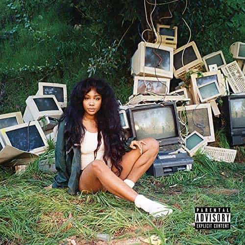

CTRL
2017
CTRL perfectly sums up what it's like to be lost in your twenties, navigating the tricky ropes of dating, working, and going out. SZA's lyrics roll off the tongue so easily, making it the perfect album for singing along with friends. Intertwined with advice from her mom on cell phone recording, no song is worth skipping. The production value is huge and yet still low-key, perfect for road trips with friends. SZA knows what it's like to feel helpless and out of control, and yet she has the wisdom and willingness to relay how to regain control in your young life.